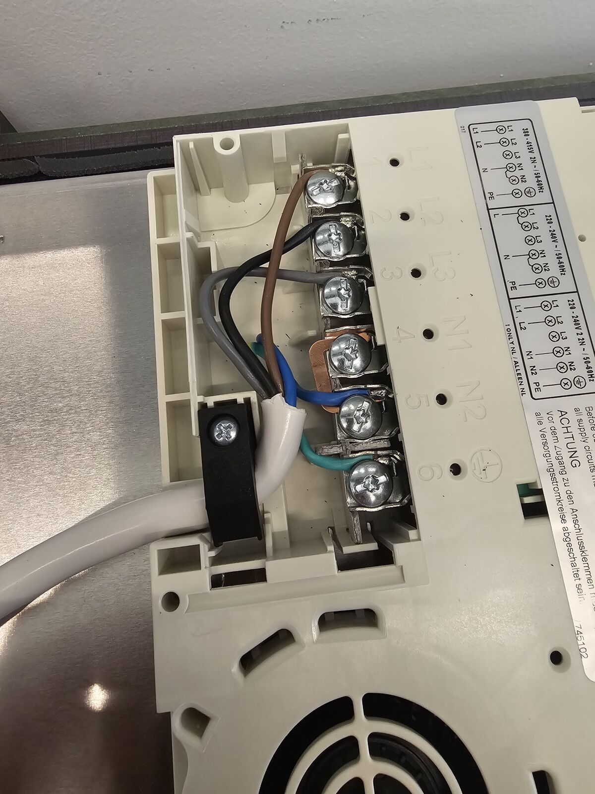
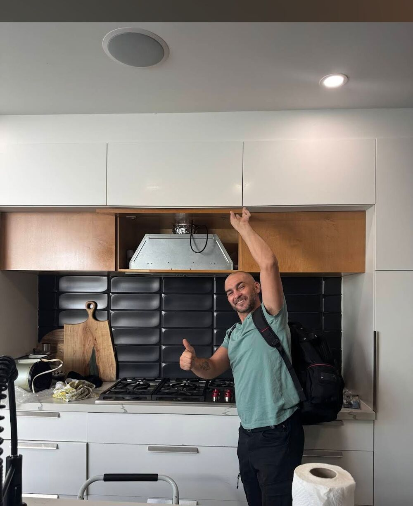

מכונות כביסהWashing machines
תוף, מנוע, משאבהDrum, motor, pump
קונספט לדוגמה שנבנה עבור אלכספרו שירות ותיקון מוצרי חשמל · זה אינו האתר הרשמי של העסקA sample concept built for Alexpro appliance service & repair · This is not the business’s official website
אלכספרו – שירות ותיקון מוצרי חשמל: מקררים, מכונות כביסה, מייבשים, מדיחי כלים, תנורים ומיקרוגל. משה שרת 51, קריית ים.Alexpro – home appliance service and repair: fridges, washing machines, dryers, dishwashers, ovens and microwaves. 51 Moshe Sharett St, Kiryat Yam.
ששת המכשירים שבשם העסק, כל אחד עם החלקים שזזים בו.The six appliances in the business’s name, each with the parts that move inside it.
תוף, מנוע, משאבהDrum, motor, pump
גופי חימום, תרמוסטט, חיווטElements, thermostat, wiring
מדחס, מעבה, תרמוסטטCompressor, condenser, thermostat
רצועה, גלגלות, מנועBelt, pulleys, motor
זרועות ריסוס, משאבהSpray arms, pump
צלחת מסתובבת, דלת, לוח מקשיםTurntable, door, keypad
בלוק חיבורים אמיתי מאחת העבודות. המדידות – להמחשה.A real terminal block from one of the jobs. The readings are illustrative.

״אלכס בדק ביסודיות והסביר שמדובר רק בגומייה, וחסך לי הוצאה מיותרת.״“Alex checked thoroughly and explained it was only a rubber belt, and saved me an unnecessary expense.”
מתוך התמונות שהעסק העלה לגוגל.From the photos the business posted on Google.

״אלכס הגיע בדיוק בשעה שקבענו, זיהה את הבעיה במהירות (גוף חימום שרוף), והסביר לי בצורה ברורה ושקופה מה דרוש לתיקון עוד לפני שהתחיל בעבודה.״“Alex arrived exactly at the time we set, found the problem quickly (a burnt-out heating element), and explained clearly and openly what the repair needed before he started work.”
״הוא הגיע בזמן שקבענו, ביצע בדיקה יסודית והסביר לי בצורה ברורה מה מקור התקלה ומה צריך להחליף.״“He came at the time we agreed, did a thorough check and explained clearly where the fault came from and what needed replacing.”
״התיקון בוצע במקום בצורה מקצועית ומהירה, והמייבש חזר לעבוד בצורה מושלמת.״“The repair was done on the spot, professionally and quickly, and the dryer went back to working perfectly.”
״מהרגע הראשון היה אדיב וסבלני. עבד בצורה מקצועית, יסודית ועיקשת עד שפתר את הבעיה לגמרי.״“From the first moment he was kind and patient. He worked professionally, thoroughly and stubbornly until he had solved the problem completely.”
בחרו את המכשיר, הוסיפו שורה, וההודעה מוכנה בוואטסאפ.Pick the appliance, add a line, and the message is ready in WhatsApp.
מקררים, מכונות כביסה, מייבשים, מדיחי כלים, תנורים ומיקרוגל.Fridges, washing machines, dryers, dishwashers, ovens and microwaves.
משה שרת 51, קריית ים. בביקורות מוזכרות עבודות באזור הקריות ובחיפה.51 Moshe Sharett St, Kiryat Yam. The reviews mention jobs around the Krayot and in Haifa.
ברישום בגוגל: פתוח 24 שעות, בכל ימות השבוע.On the Google listing: open 24 hours, every day of the week.
בוואטסאפ או בשיחה ל־050-567-8393. כדאי לכתוב איזה מכשיר ומה הוא עושה.WhatsApp or a call to 050-567-8393. It helps to say which appliance and what it is doing.